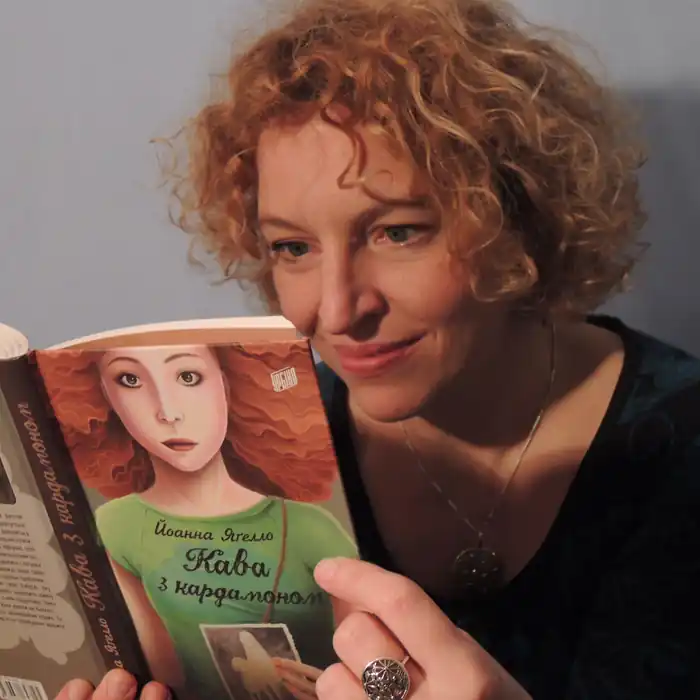
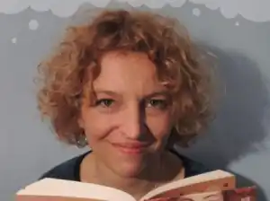

Йоанна Яґелло (пол. Joanna Jagiełło, у дівоцтві Рошковська, нар. 1974, Варшава) — польська письменниця та журналістка, авторка творів для дітей та молоді.
Народилася Йоaнна Яґелло 4 серпня 1974 року у Варшаві. Закінчила відділення англійської філології Варшавського університету. Викладала у ньому ж мовознавство, працювала вчителькою англійської мови у гімназіях та ліцеях. Співпрацювала з часописами "Perspektywy" та "Cogito". Редакторка підручників з англійської мови у Pearson Central Europe.
Дебютувала у 1997 році збірокю віршів "Moje pierwsze donikąd". Перше прозове видання — "Кава з кардамоном" (Wydawnictwo Literatura, 2011), за нього була номінована до нагороди "Книжка року 2011" польської секції IBBY. Також книжка отримала номінацію на нагороду Donga і потрапила у "Список скарбів" Музею дитячої книги. Перекладена українською мовою (перекладач — Божена Антоняк), вийшла у березні 2013 року у видавництві "Урбіно". Наступна книжка — продовження "Кави з кардамоном", "Шоколад з чилі" (Wydawnictwo Literatura, 2013). Має дві доньки, Юльку (нар. 1994) і Басю (нар. 2004). У 2013 році була спеціальним гостем Дитячого фестивалю у Львові. Публікації Moje pierwsze donikąd (вірші, 1997) Kawa z kardamonem (молодіжний роман, Wydawnictwo Literatura 2011) Urodzinek — (оповідання для дітей, збірка Opowiadania o zwierzętach, Wydawnictwo Literatura, Лодзь 2012) Gołąb — (оповідання для дорослих, антологія Nikt nigdy, Towarzystwo Aktywnej Komunikacji i Centrum Kultury ZAMEK, Вроцлав 2012) Czekolada z chili (молодіжний роман, Wydawnictwo Literatura, Лодзь 2013) Переклади українською Кава з кардамоном: роман / Йоанна Яґелло, пер. з пол. Божени Антоняк Шоколад із чилі: роман / Йоанна Яґелло, пер. з пол. Божени Антоняк. Нагороди "Кава з кардамоном" — номінація на нагороду "Книжка року" 2011 польської секції IBBY, номінація на нагороду Donga 2011